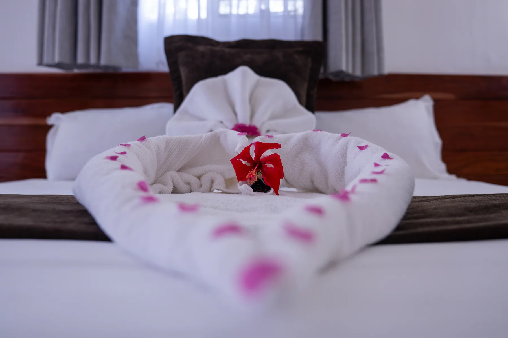
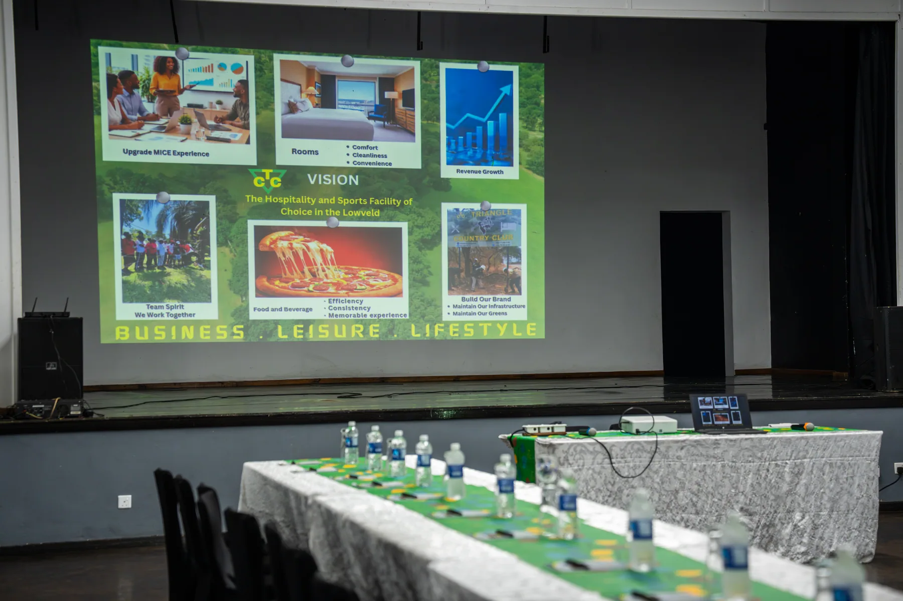
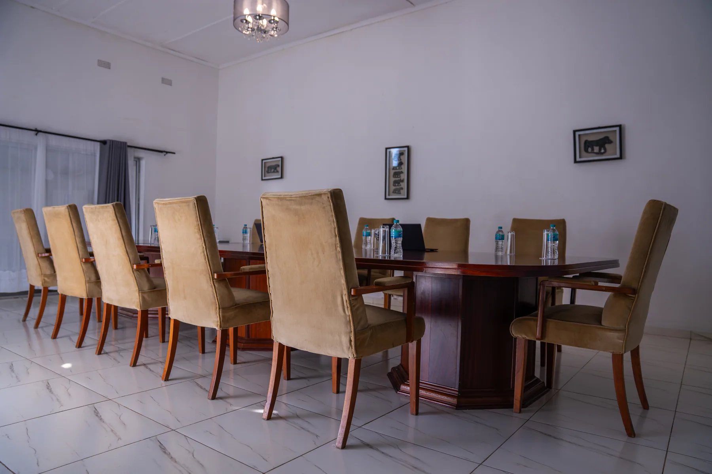
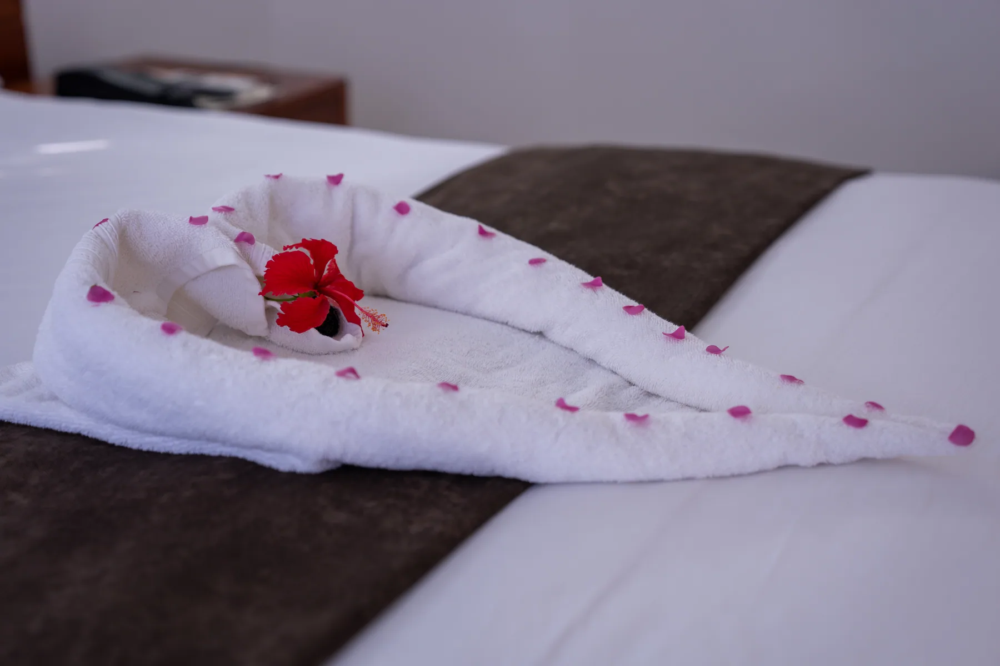
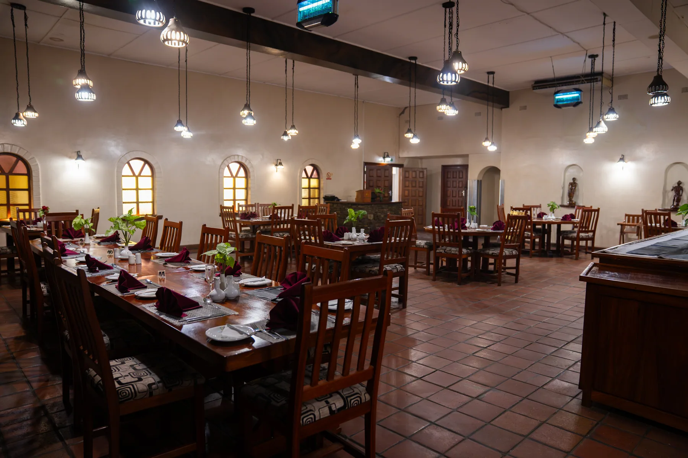
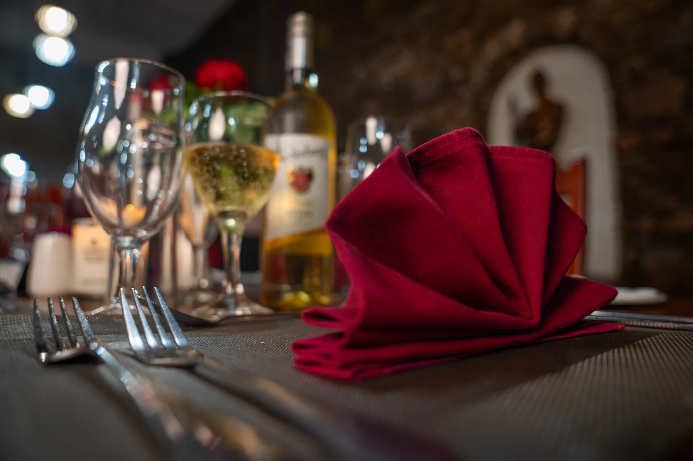
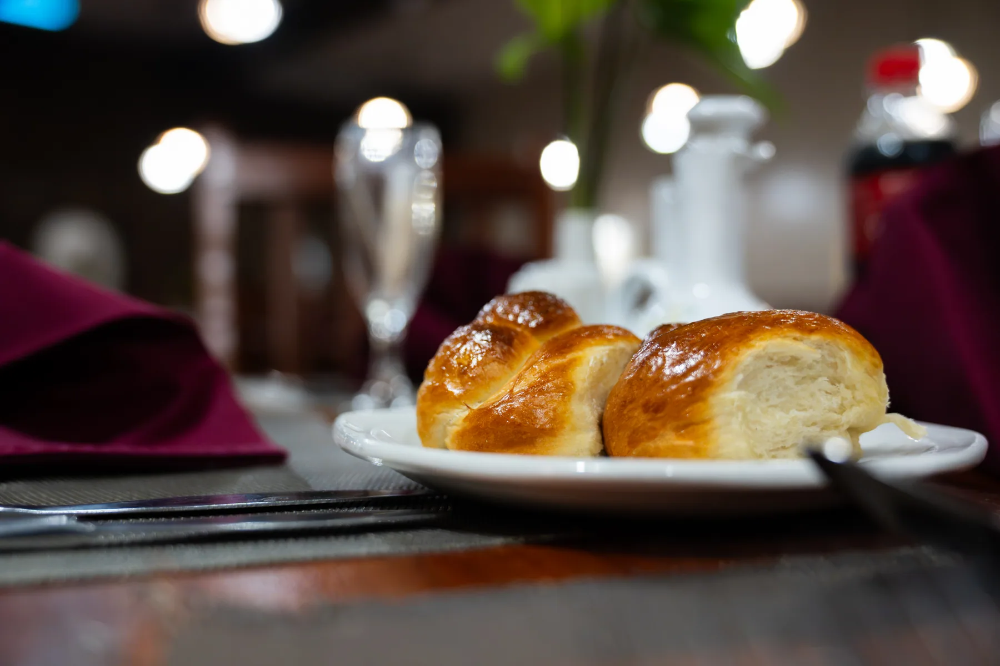
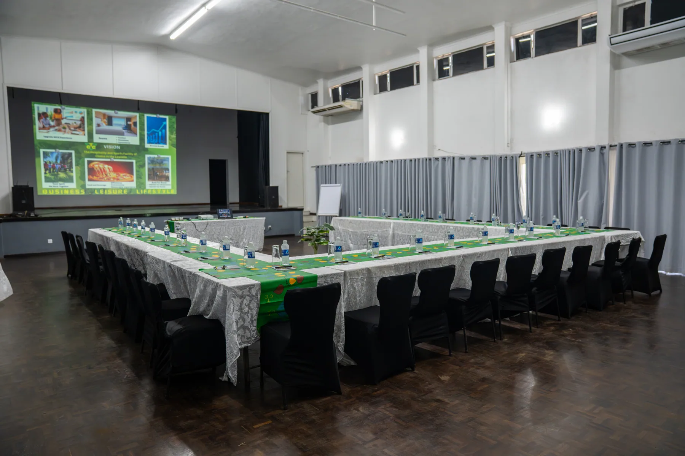

Accommodation & Conferencing
A country retreat in the Lowveld.
45 comfortable chalets, the Baobab Restaurant and the region's finest conference and wedding facilities — an affordable, welcoming base 25 km from Chiredzi, and the perfect stop-over en route to Gonarezhou.

A garden-side chaletAccommodation
Comfortable, secure & quietly green.
Our accommodation comprises 45 comfortable chalets, designed to provide a relaxing stay for individuals, families and corporate guests — or an easy, affordable overnight stop for overlanders en route to Gonarezhou. Comfort, function and security, wrapped in the calm of an irrigated estate.
En-suite rooms
Quiet, secure rooms in a calm, irrigated garden setting.
Secure parking
An easy in-and-out for overland travellers on the Gonarezhou route.
Remote-work friendly
A calm base for a working week, with the Baobab a short stroll away.
Dining
The Baobab Restaurant.
Dining is an experience in itself — the Baobab Restaurant is renowned for its expertly prepared Zimbabwean beef steaks. Add our welcoming bars, the perfect place to relax after a day of business, sport or exploration.
 The Baobab Restaurant
The Baobab Restaurant
Conferencing & Events
The Lowveld's premier venue for gathering.
Seminars, corporate retreats, strategy meetings, team-building, weddings and special events — fully catered, in the calm of an irrigated estate.


Conferences & seminars
State-of-the-art facilities that host the region's agricultural and corporate symposiums.
Weddings & celebrations
Historic halls and green grounds for the Lowveld's most memorable occasions.
Movie cinema & theatre
Film nights and live performance at the club cinema — a rare purpose-built screen and stage in the Lowveld.
Explore the region
A base for the Lowveld & beyond.
Gonarezhou National Park
Zimbabwe's wild, elephant-rich second-largest park — Triangle is the natural overnight base on the overland route in.
Murray MacDougall Museum
The story of the pioneer who irrigated the Lowveld and founded the sugar estate, a short drive from the club.
Mteri, Jiri & Sweet Waters
Lakeside angling at Mteri, birdlife on Jiri Dam and camping at Sweet Waters — easy day-trips from the estate.
Also within reach: Great Zimbabwe and Lake Mutirikwi, near Masvingo. Ask our team to help plan your itinerary.
In pictures
Around the club.






